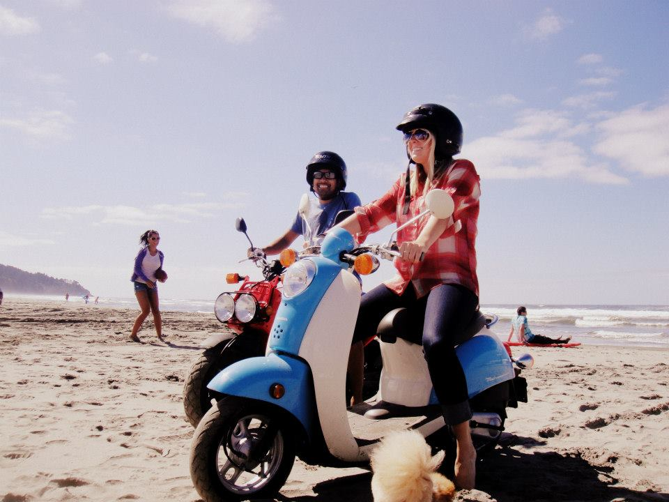
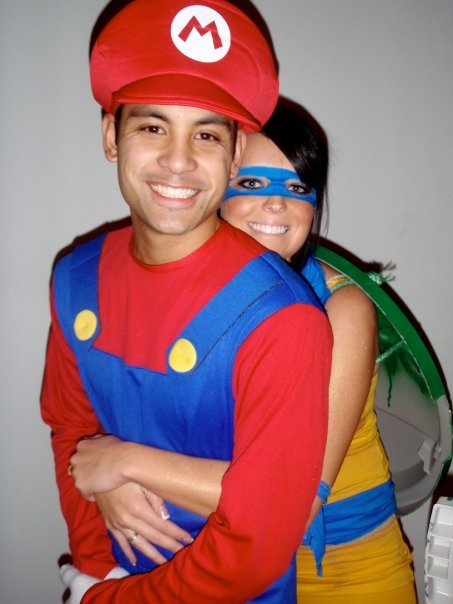
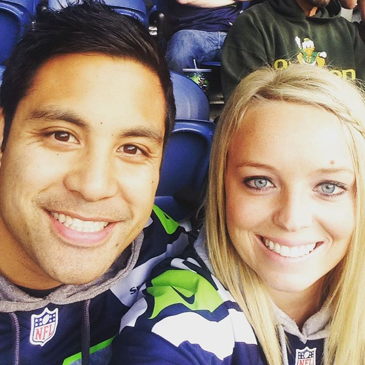
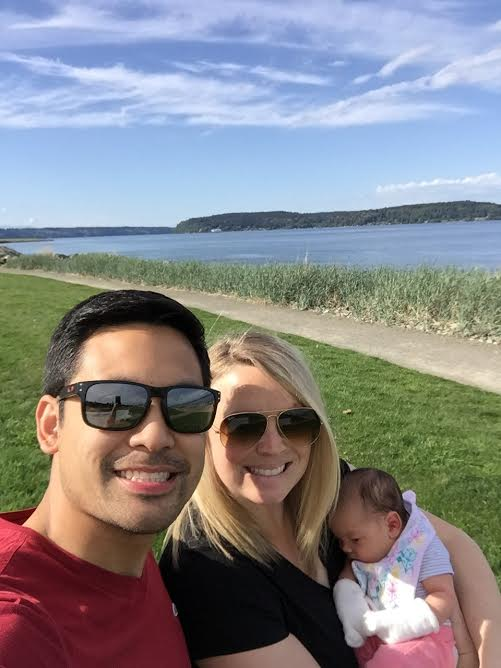

Once upon a time...

What once was a crush on the 3rd period English Teacher's Assistant turned into a loving bond of laughter, happiness and Seahawks cheering! Heather and Jon went to middle school and high school together, but didn't see sparks fly until years later right after Jon graduated from Western Washington Unversity and Heather was completing her final year at Centeral Washington University.

Their first time getting together was on July 4th, 2009 and sparks flew alongside the fireworks that night. Since then, they were inseparable. They went to Seahawks games, Mariner games, camping with friends, going to the Puyallup Fair and of course, played on a kickball team together.

On September 12th, 2015 Jon organized a "group hike" to Mirror Lake, where he proposed to Heather with the help of close friends Chris, Natalie, Jesse and Anthony to pull off the plan.

We are so excited to celebrate our declartion of love to one another in front of our closest family and friends. We want to thank everyone that has been there in support of us and helping our growth in our journey of becoming a family with our beautiful daughter Gabriella.
